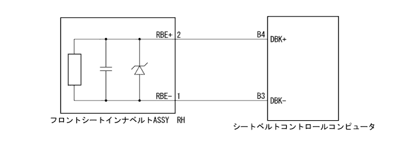
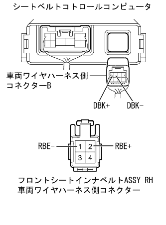
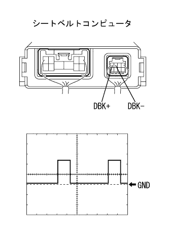

DTC B2074/24 Driver Side Buckle Switch Malfunction |
| DTC No. | DTC Detection Condition | Inspection Area |
|---|---|---|
| B2074/24 | An open or short in the front seat inner belt assembly RH (buckle switch) circuit continues for 1 seconds |
|

| Step 1 | Inspect Wire Harness and Connector (Front Seat Inner Belt Assembly RH - Seat Belt Control Computer) |
for reference. |
Disconnect the front seat inner belt assembly RH connector and connector B of the seat belt control computer.
Using SST (Toyota electrical tester), measure the resistance between each terminal of the front seat inner belt assembly RH vehicle wire harness side connector and seat belt control computer vehicle wire harness side connector B. (For Terminals of ECU, see)
| Tester Connection | Condition | Standard |
|---|---|---|
| 1(RBE-) - B3(DBK-) | Always | Below 1 Ω |
| 2(RBE+) - B4(DBK+) |
Using SST (Toyota electrical tester), measure the resistance between each terminal of the front seat inner belt assembly RH vehicle wire harness side connector and body ground.
| Tester Connection | Condition | Standard |
|---|---|---|
| 1 (RBE-) - Body ground | Always | 10 kΩ or higher |
| 2 (RBE+) - Body ground |
|
| ||||
| OK | |
| Step 2 | Inspect Seat Belt Control Computer (DBK+ Terminal, DBK- Terminal) |
Connect connector B of the seat belt control computer.
Check that the front seat inner belt assembly RH connector is disconnected.
Turn IG ON.
 |
Using SST (TaSCAN), measure the waveform between the terminals of the seat belt control computer connector. (For Terminals of ECU, see)
| Item | Description |
|---|---|
| Measurement Terminal | B4(DBK+) - B3(DBK-) |
| Tool Setting | 2V/DIV、20ms/DIV |
| Measurement Condition | IG ON |
|
| ||||
| OK | ||
| ||